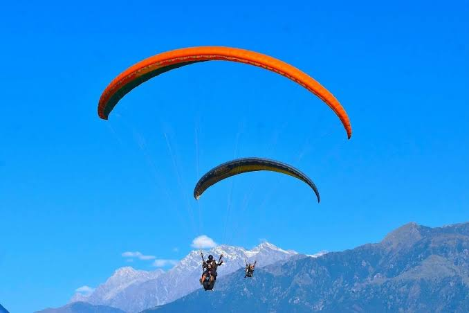
01 / KANGRA
Bir Billing
A mountain escape known for open skies, village life, and spectacular paragliding views.
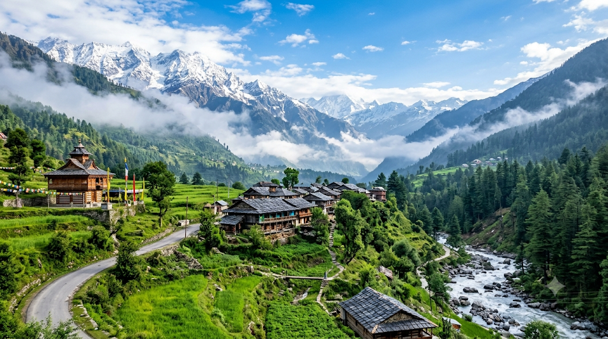
A FIELD JOURNAL FROM THE HIMALAYAS
A visual journey through mountain roads, cedar forests, welcoming villages, and the high country beyond.
Explore the placesA little closer to the clouds
NOT JUST A PLACE. A FEELING.
Travelogue is a personal journal celebrating Himachal Pradesh. Explore its hill towns, quiet villages, forest trails, and high-altitude valleys through photographs and short travel notes. Find inspiration for your own journey and discover the character of each place, one story at a time.
THE TRAVEL JOURNAL
Choose a direction. Let the mountains set the pace.
A MAP OF MOMENTS
Small glimpses of the places that make the journey.

A mountain escape known for open skies, village life, and spectacular paragliding views.
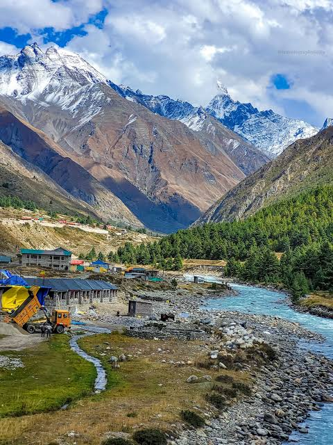
A remote Himalayan village surrounded by rugged peaks and the beautiful Baspa valley.
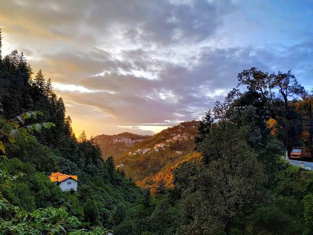
Pine-covered hills, old-world streets, and peaceful viewpoints give this hill town its charm.
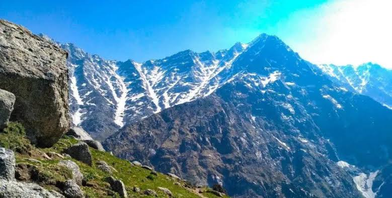
A lively mountain town with forest walks, local cafés, and the Dhauladhar range on the horizon.
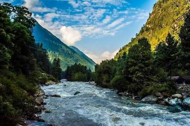
Follow the Parvati River through a relaxed valley of riverside walks and trail-side stops.
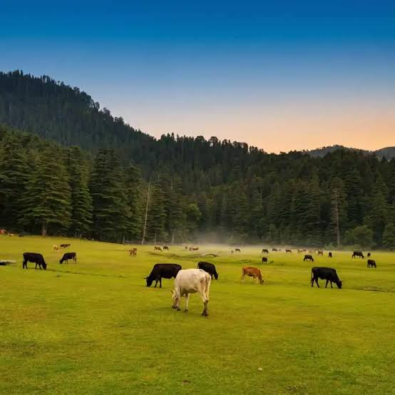
A broad green meadow framed by cedar forest and distant mountain scenery.
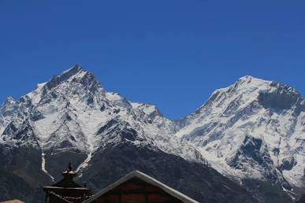
A dramatic region of high peaks, river valleys, traditional villages, and orchard country.
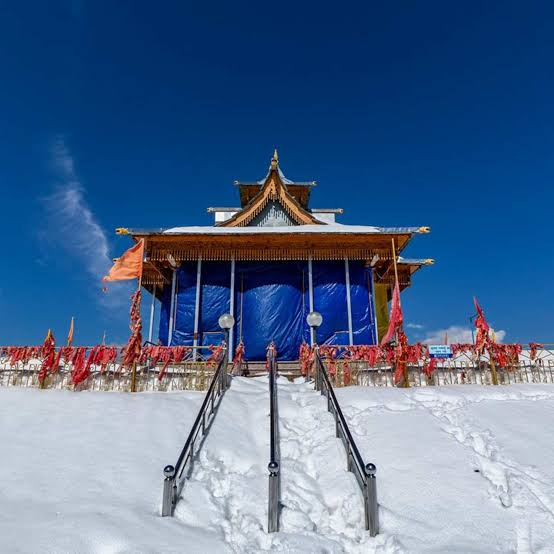
Forest roads, apple-growing slopes, and wide mountain views make this a scenic pause.
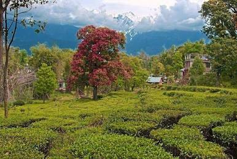
A gentle green landscape of tea gardens with the Dhauladhar mountains beyond.
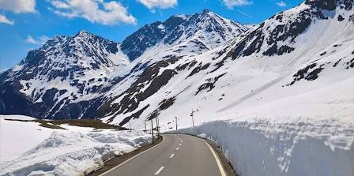
A dramatic high mountain crossing with changing weather and sweeping Himalayan views.
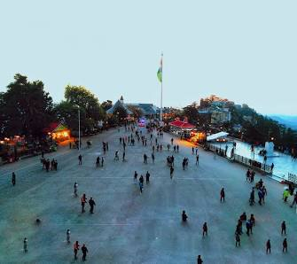
Heritage lanes, ridge-top walks, and pine slopes give the hill capital its distinct feel.
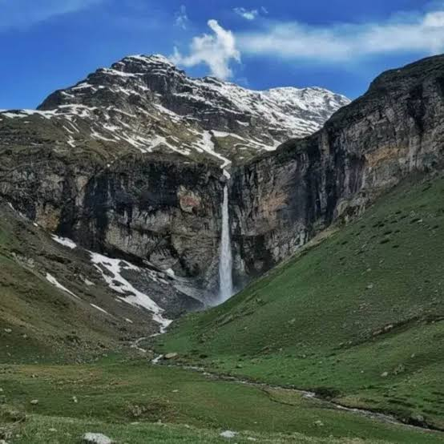
A quiet village in Lahaul set among rugged peaks, open valleys, and river scenery.
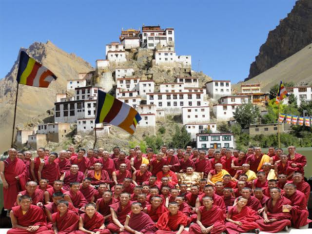
A high-altitude cold desert of stark mountains, ancient settlements, and enormous skies.
Descriptions are travel summaries based on the destination names. Please check each caption against its specific photo.
TRAVELOGUE · HIMACHAL PRADESH